اللقطة الأصلية
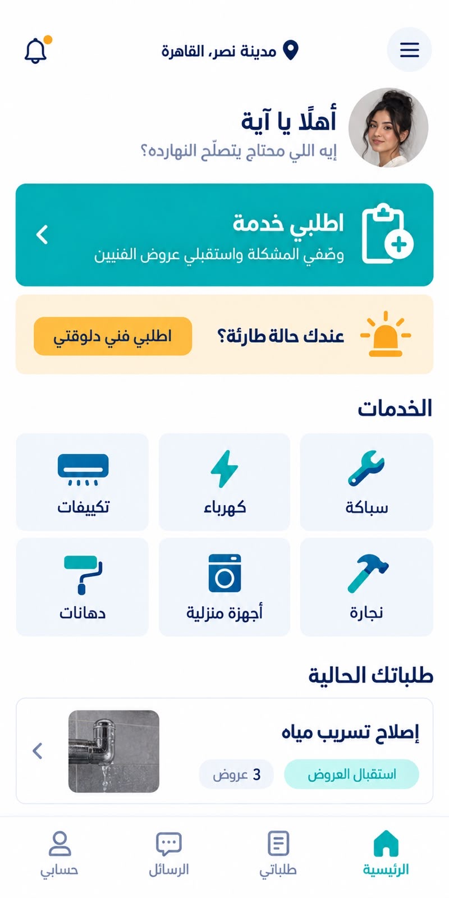
49 لقطة Android بحجم 400×800، وكل لقطة بجانب المرجع الأصلي للشاشة.
بوابة الاعتماد: راجع عمود Android. لن تبدأ 3ج قبل اعتماد هذه الدفعة. لقطات iOS والمقارنة البكسلية مؤجلتان للدفعة النهائية بقرار DEC-045.
SCR-C01-loading
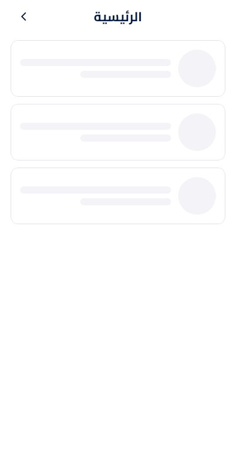
SCR-C01-errorSCR-C01-empty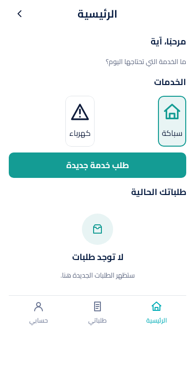
SCR-C01-marketplace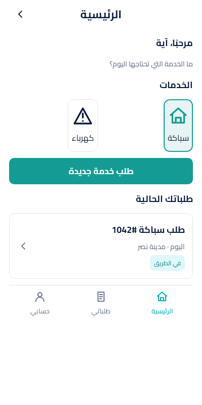
SCR-C01-staffSCR-C02-loading
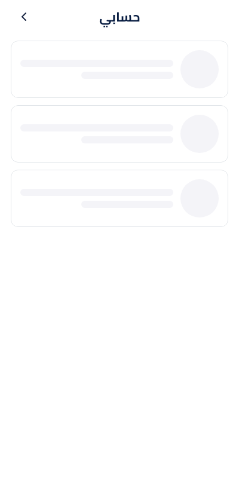
SCR-C02-errorSCR-C02-verified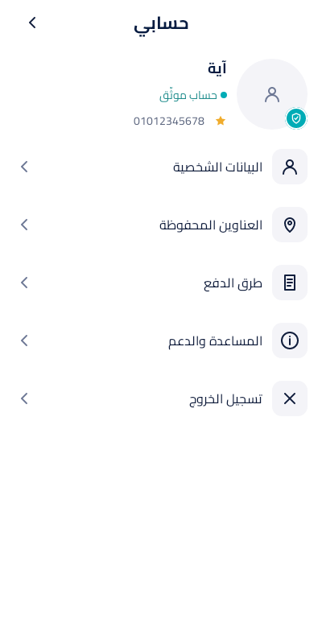
SCR-C02-unverified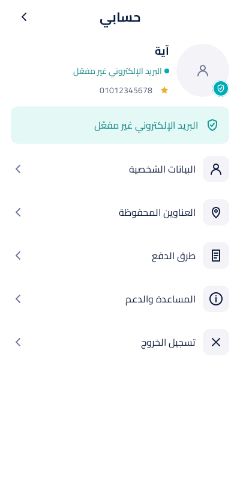
SCR-C03-loading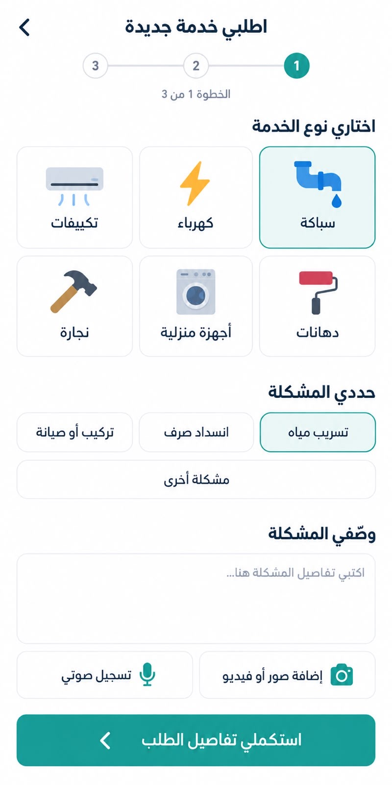
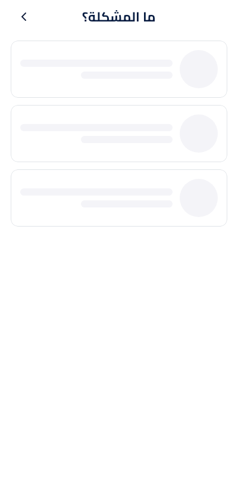
SCR-C03-errorSCR-C03-empty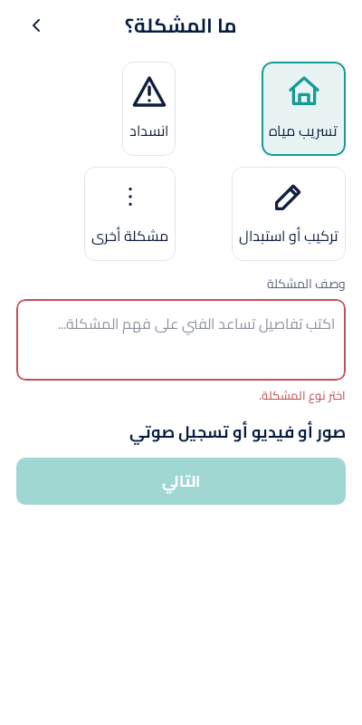
SCR-C03-other_short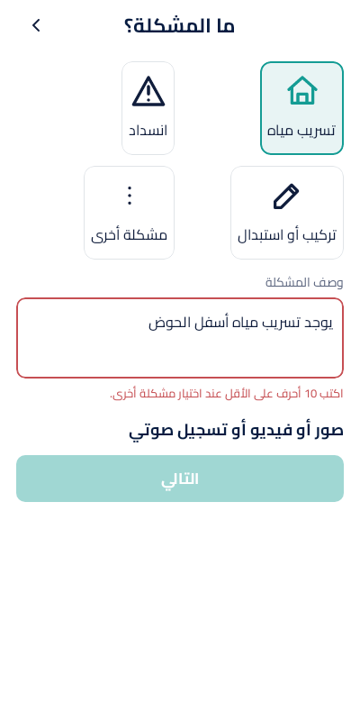
SCR-C03-with_media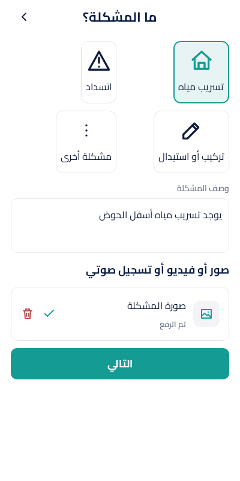
SCR-C04-loadingSCR-C04-errorSCR-C04-marketplace_now
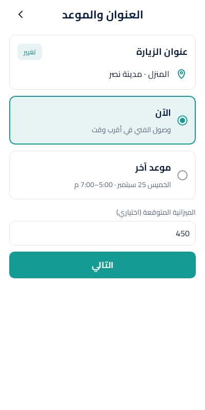
SCR-C04-now_unavailable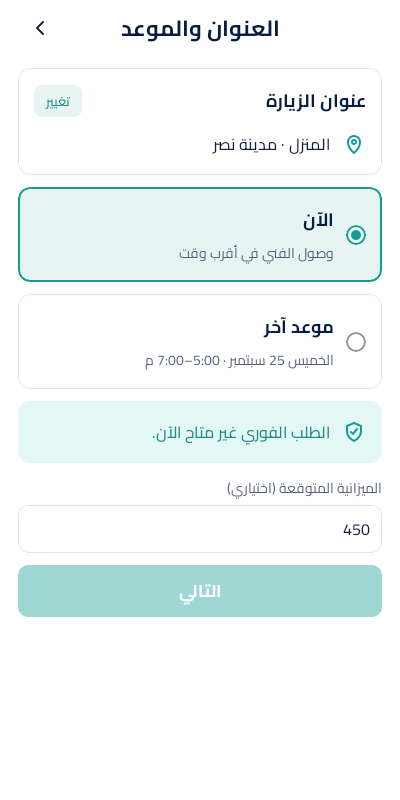
SCR-C04-scheduled_missing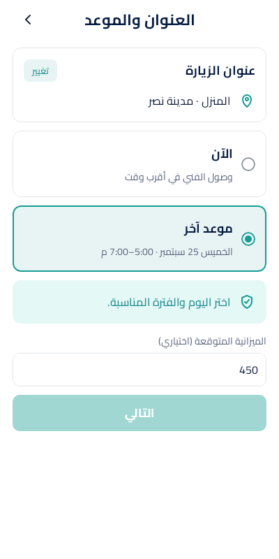
SCR-C04-staff_scheduled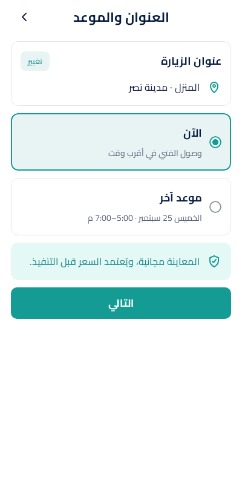
SCR-C05-loadingSCR-C05-errorSCR-C05-terms_missing
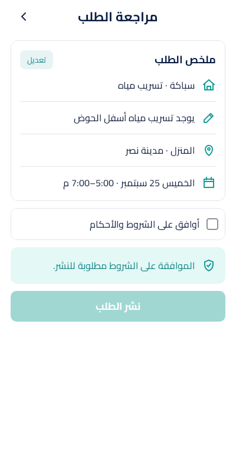
SCR-C05-marketplace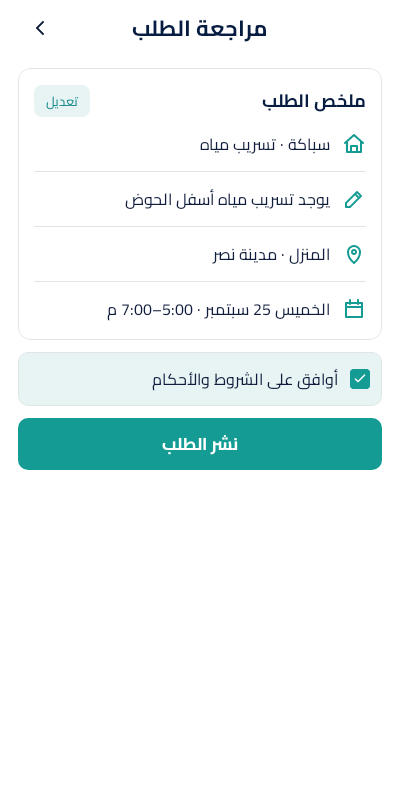
SCR-C05-staff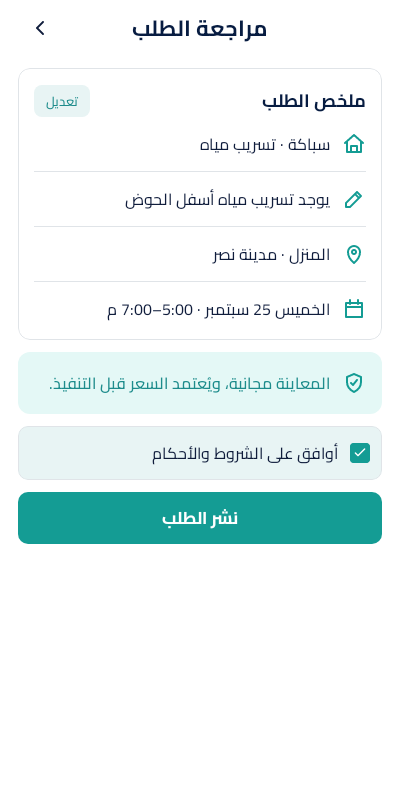
SCR-C06-loadingSCR-C06-errorSCR-C06-emptySCR-C06-execution_now
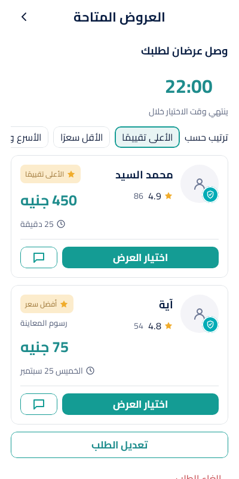
SCR-C06-inspection
SCR-C06-scheduled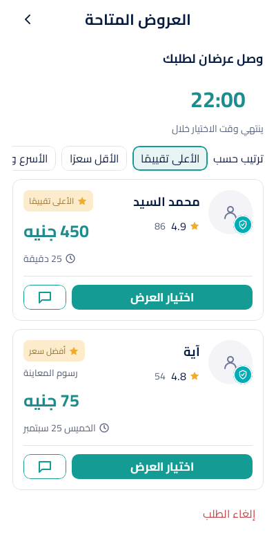
SCR-C07-loading
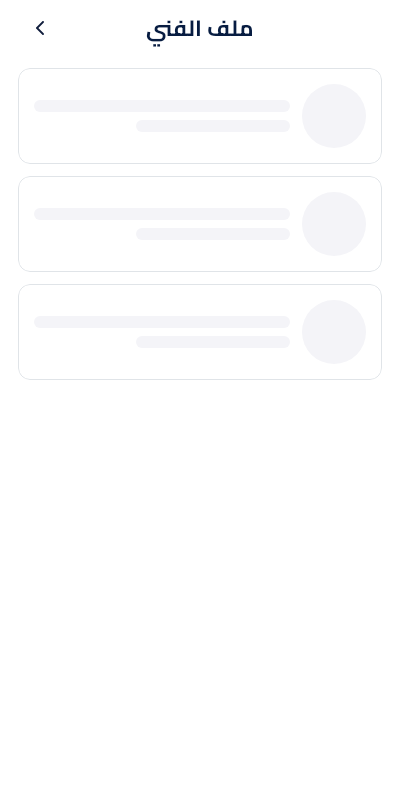
SCR-C07-errorSCR-C07-available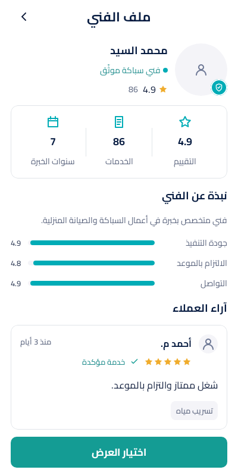
SCR-C07-unavailableSCR-C08-loadingSCR-C08-errorSCR-C08-execution

SCR-C08-inspectionSCR-C08-scheduled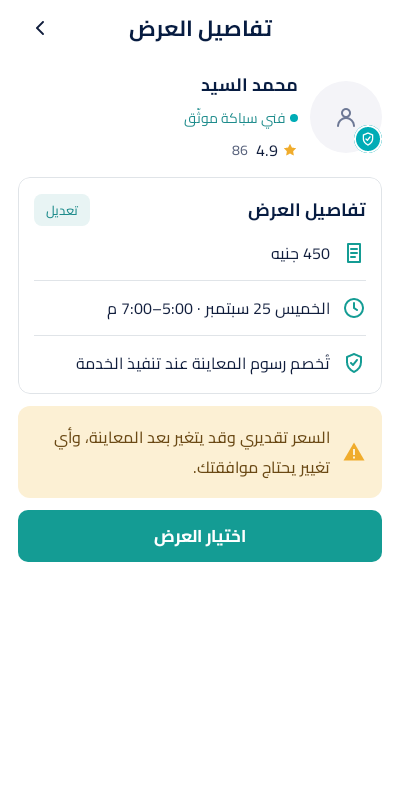
SCR-C09-loadingSCR-C09-errorSCR-C09-confirmed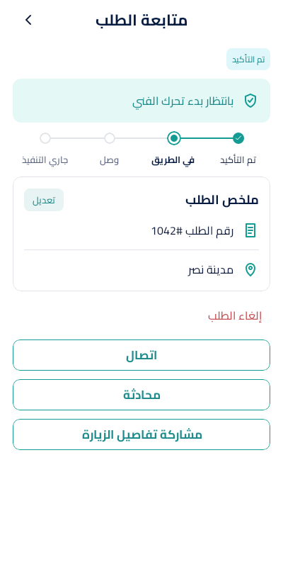
SCR-C09-on_the_way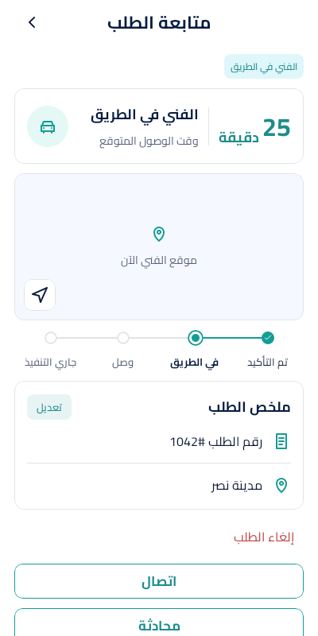
SCR-C09-approximate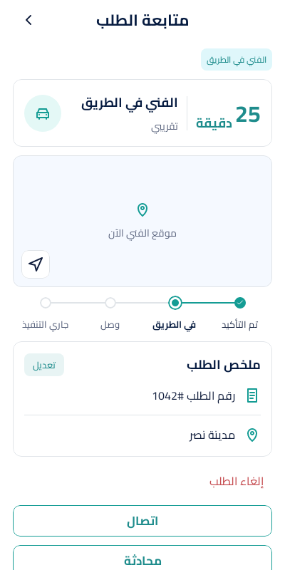
SCR-C09-arrivedSCR-C09-disputed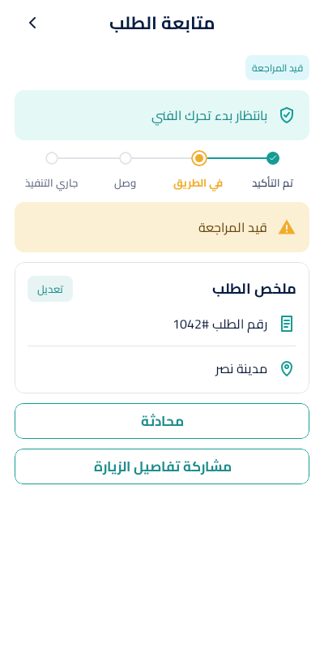
SCR-C09-cancelled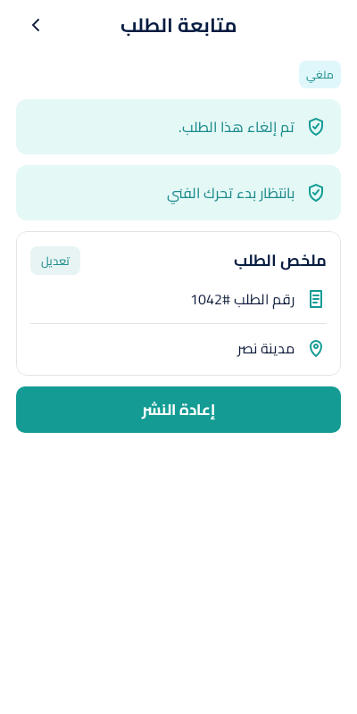
SCR-C09-offline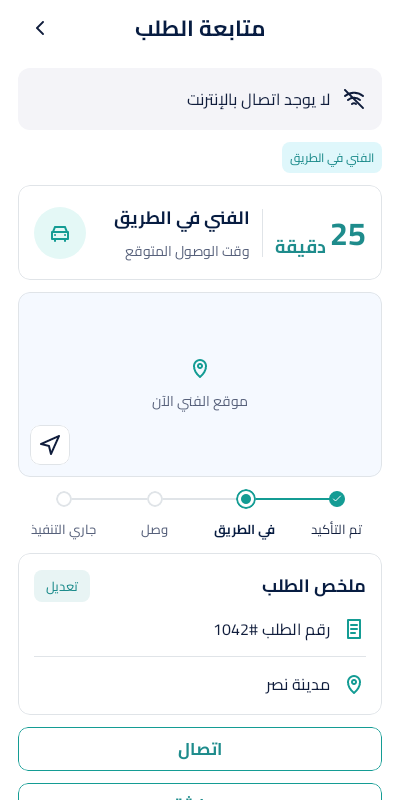